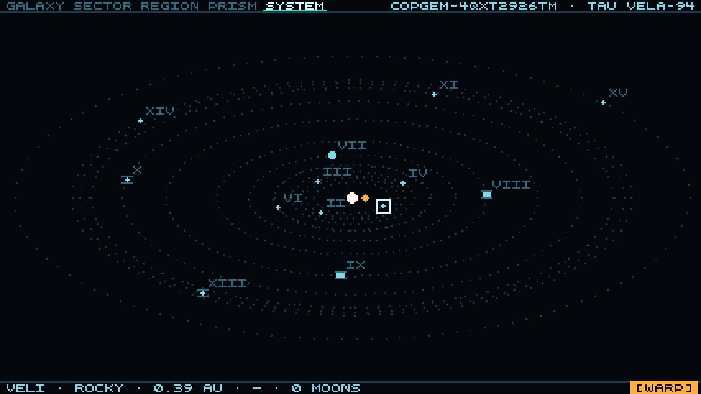
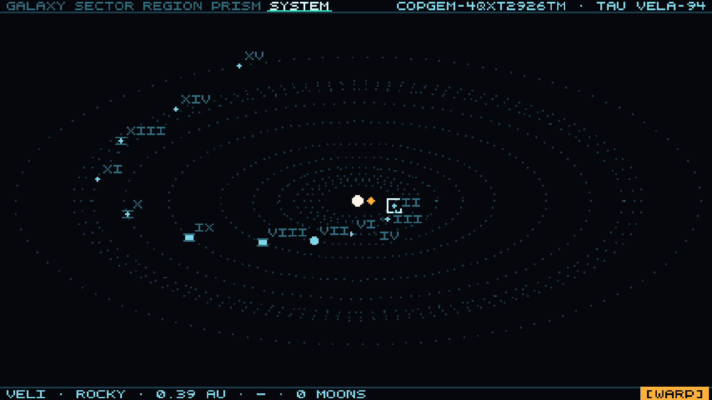
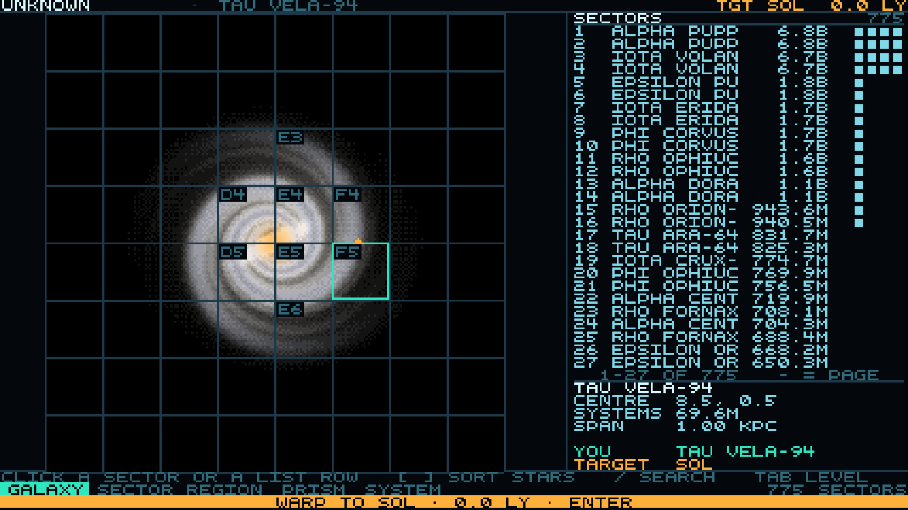
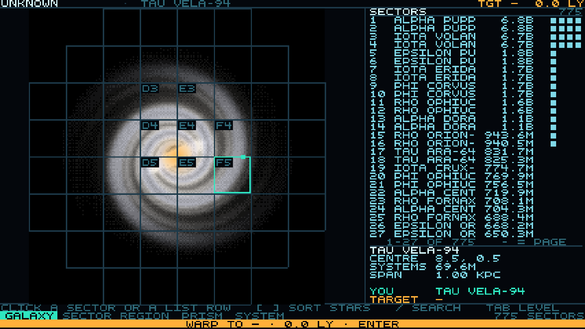

Each pair flips in place, because a difference you can flip is a difference you can actually see. Click either button, or press 1 / 2 on the first and 3 / 4 on the second.
A placed each planet by its position in a list. B places it at its real orbital angle.


A looks better. B is correct. A's even spacing was fake — it was the planet's slot in a list, which is why pressing [ or ] used to scatter them. The cost of B is real: genuine orbits cluster, so the inner planets bunch to the right of the star and the numerals II III IV VI VII overlap where A kept them apart. I'm treating unreadable numerals as a defect and fixing the label placer unless you say otherwise.
"Remove the negative/non-selectable space and redraw the cells from there."


32 of the 64 cells used to lead nowhere. Now none do, and no sector became unreachable. The chunk you asked to keep is untouched — same 27-texel cell, same 8×8 lattice; only the map's extent moved, 44 → 36 kpc, measured by asking the picker itself where it stops answering. Worth your judgement: whether the outer cells still read as too empty. If they do, the extent can come in further.